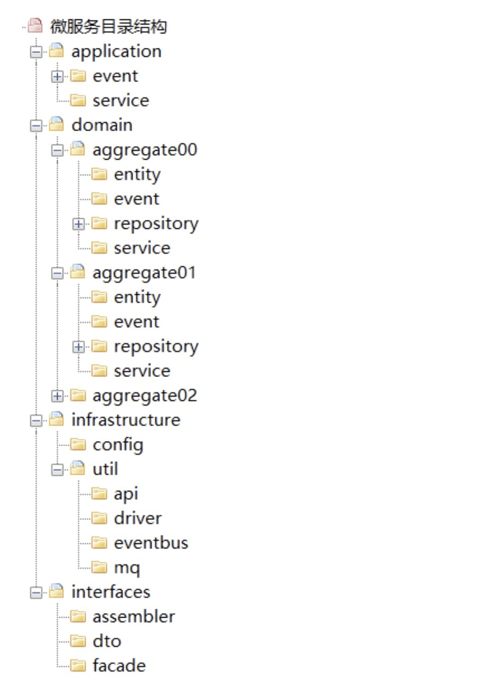

- 00 开篇词 学好了DDD，你能做什么？.md
- 01 领域驱动设计：微服务设计为什么要选择DDD.md
- 02 领域、子域、核心域、通用域和支撑域：傻傻分不清？.md
- 03 限界上下文：定义领域边界的利器
- 04 实体和值对象：从领域模型的基础单元看系统设计.md
- 05 聚合和聚合根：怎样设计聚合？.md
- 06 领域事件：解耦微服务的关键.md
- 07 DDD分层架构：有效降低层与层之间的依赖.md
- 08 微服务架构模型：几种常见模型的对比和分析.md
- 09 中台：数字转型后到底应该共享什么？.md
- 10 DDD、中台和微服务：它们是如何协作的？.md
- 11 DDD实践：如何用DDD重构中台业务模型？.md
- 12 领域建模：如何用事件风暴构建领域模型？.md
- 13 代码模型（上）：如何使用DDD设计微服务代码模型？.md
- 14 代码模型（下）：如何保证领域模型与代码模型的一致性？.md
- 15 边界：微服务的各种边界在架构演进中的作用？.md
- 16 视图：如何实现服务和数据在微服务各层的协作？.md
- 17 从后端到前端：微服务后，前端如何设计？.md
- 18 知识点串讲：基于DDD的微服务设计实例.md
- 19 总结（一）：微服务设计和拆分要坚持哪些原则？.md
- 20 总结（二）：分布式架构关键设计10问.md
- 答疑：有关3个典型问题的讲解.md
- 结束语 所谓高手，就是跨过坑和大海.md
13 代码模型（上）：如何使用DDD设计微服务代码模型？
你好，我是欧创新。
上一讲我们完成了领域模型的设计，接下来我们就要开始微服务的设计和落地了。那微服务落地时首先要确定的就是微服务的代码结构，也就是我今天要讲的微服务代码模型。
只有建立了标准的微服务代码模型和代码规范后，我们才可以将领域对象所对应的代码对象放在合适的软件包的目录结构中。标准的代码模型可以让项目团队成员更好地理解代码，根据代码规范实现团队协作；还可以让微服务各层的逻辑互不干扰、分工协作、各据其位、各司其职，避免不必要的代码混淆。另外，标准的代码模型还可以让你在微服务架构演进时，轻松完成代码重构。
那在 DDD 里，微服务的代码结构长什么样子呢？我们又是依据什么来建立微服务代码模型？这就是我们今天重点要解决的两个问题。
DDD 分层架构与微服务代码模型
我们参考 DDD 分层架构模型来设计微服务代码模型。没错！微服务代码模型就是依据 DDD 分层架构模型设计出来的。那为什么是 DDD 分层架构模型呢？

我们先简单回顾一下 [第 07 讲] 介绍过的 DDD 分层架构模型。它包括用户接口层、应用层、领域层和基础层，分层架构各层的职责边界非常清晰，又能有条不紊地分层协作。
用户接口层：面向前端提供服务适配，面向资源层提供资源适配。这一层聚集了接口适配相关的功能。
应用层职责：实现服务组合和编排，适应业务流程快速变化的需求。这一层聚集了应用服务和事件相关的功能。
领域层：实现领域的核心业务逻辑。这一层聚集了领域模型的聚合、聚合根、实体、值对象、领域服务和事件等领域对象，以及它们组合所形成的业务能力。
基础层：贯穿所有层，为各层提供基础资源服务。这一层聚集了各种底层资源相关的服务和能力。
业务逻辑从领域层、应用层到用户接口层逐层封装和协作，对外提供灵活的服务，既实现了各层的分工，又实现了各层的协作。因此，毋庸置疑，DDD 分层架构模型就是设计微服务代码模型的最佳依据。
微服务代码模型
现在，我们来看一下，按照 DDD 分层架构模型设计出来的微服务代码模型到底长什么样子呢？
其实，DDD 并没有给出标准的代码模型，不同的人可能会有不同理解。下面要说的这个微服务代码模型是我经过思考和实践后建立起来的，主要考虑的是微服务的边界、分层以及架构演进。
微服务一级目录结构
微服务一级目录是按照 DDD 分层架构的分层职责来定义的。从下面这张图中，我们可以看到，在代码模型里分别为用户接口层、应用层、领域层和基础层，建立了 interfaces、application、domain 和 infrastructure 四个一级代码目录。

这些目录的职能和代码形态是这样的。
**Interfaces（用户接口层）：**它主要存放用户接口层与前端交互、展现数据相关的代码。前端应用通过这一层的接口，向应用服务获取展现所需的数据。这一层主要用来处理用户发送的 Restful 请求，解析用户输入的配置文件，并将数据传递给 Application 层。数据的组装、数据传输格式以及 Facade 接口等代码都会放在这一层目录里。
**Application（应用层）：**它主要存放应用层服务组合和编排相关的代码。应用服务向下基于微服务内的领域服务或外部微服务的应用服务完成服务的编排和组合，向上为用户接口层提供各种应用数据展现支持服务。应用服务和事件等代码会放在这一层目录里。
**Domain（领域层）：**它主要存放领域层核心业务逻辑相关的代码。领域层可以包含多个聚合代码包，它们共同实现领域模型的核心业务逻辑。聚合以及聚合内的实体、方法、领域服务和事件等代码会放在这一层目录里。
**Infrastructure（基础层）：**它主要存放基础资源服务相关的代码，为其它各层提供的通用技术能力、三方软件包、数据库服务、配置和基础资源服务的代码都会放在这一层目录里。
各层目录结构
1. 用户接口层
Interfaces 的代码目录结构有：assembler、dto 和 façade 三类。
**Assembler：**实现 DTO 与领域对象之间的相互转换和数据交换。一般来说 Assembler 与 DTO 总是一同出现。
**Dto：**它是数据传输的载体，内部不存在任何业务逻辑，我们可以通过 DTO 把内部的领域对象与外界隔离。
**Facade：**提供较粗粒度的调用接口，将用户请求委派给一个或多个应用服务进行处理。
2. 应用层
Application 的代码目录结构有：event 和 service。
**Event（事件）：**这层目录主要存放事件相关的代码。它包括两个子目录：publish 和 subscribe。前者主要存放事件发布相关代码，后者主要存放事件订阅相关代码（事件处理相关的核心业务逻辑在领域层实现）。
这里提示一下：虽然应用层和领域层都可以进行事件的发布和处理，但为了实现事件的统一管理，我建议你将微服务内所有事件的发布和订阅的处理都统一放到应用层，事件相关的核心业务逻辑实现放在领域层。通过应用层调用领域层服务，来实现完整的事件发布和订阅处理流程。
**Service（应用服务）：**这层的服务是应用服务。应用服务会对多个领域服务或外部应用服务进行封装、编排和组合，对外提供粗粒度的服务。应用服务主要实现服务组合和编排，是一段独立的业务逻辑。你可以将所有应用服务放在一个应用服务类里，也可以把一个应用服务设计为一个应用服务类，以防应用服务类代码量过大。
3. 领域层
Domain 是由一个或多个聚合包构成，共同实现领域模型的核心业务逻辑。聚合内的代码模型是标准和统一的，包括：entity、event、repository 和 service 四个子目录。

而领域层聚合内部的代码目录结构是这样的。
**Aggregate（聚合）：**它是聚合软件包的根目录，可以根据实际项目的聚合名称命名，比如权限聚合。在聚合内定义聚合根、实体和值对象以及领域服务之间的关系和边界。聚合内实现高内聚的业务逻辑，它的代码可以独立拆分为微服务。
以聚合为单位的代码放在一个包里的主要目的是为了业务内聚，而更大的目的是为了以后微服务之间聚合的重组。聚合之间清晰的代码边界，可以让你轻松地实现以聚合为单位的微服务重组，在微服务架构演进中有着很重要的作用。
**Entity（实体）：**它存放聚合根、实体、值对象以及工厂模式（Factory）相关代码。实体类采用充血模型，同一实体相关的业务逻辑都在实体类代码中实现。跨实体的业务逻辑代码在领域服务中实现。
**Event（事件）：**它存放事件实体以及与事件活动相关的业务逻辑代码。
**Service（领域服务）：**它存放领域服务代码。一个领域服务是多个实体组合出来的一段业务逻辑。你可以将聚合内所有领域服务都放在一个领域服务类中，你也可以把每一个领域服务设计为一个类。如果领域服务内的业务逻辑相对复杂，我建议你将一个领域服务设计为一个领域服务类，避免由于所有领域服务代码都放在一个领域服务类中，而出现代码臃肿的问题。领域服务封装多个实体或方法后向上层提供应用服务调用。
**Repository（仓储）：**它存放所在聚合的查询或持久化领域对象的代码，通常包括仓储接口和仓储实现方法。为了方便聚合的拆分和组合，我们设定了一个原则：一个聚合对应一个仓储。
特别说明：按照 DDD 分层架构，仓储实现本应该属于基础层代码，但为了在微服务架构演进时，保证代码拆分和重组的便利性，我是把聚合仓储实现的代码放到了聚合包内。这样，如果需求或者设计发生变化导致聚合需要拆分或重组时，我们就可以将包括核心业务逻辑和仓储代码的聚合包整体迁移，轻松实现微服务架构演进。
4. 基础层
Infrastructure 的代码目录结构有：config 和 util 两个子目录。
**Config：**主要存放配置相关代码。
**Util：**主要存放平台、开发框架、消息、数据库、缓存、文件、总线、网关、第三方类库、通用算法等基础代码，你可以为不同的资源类别建立不同的子目录。
代码模型总目录结构
在完成一级和二级代码模型设计后，你就可以看到下图这样的微服务代码模型的总目录结构了。

总结
今天我们根据 DDD 分层架构模型建立了标准的微服务代码模型，在代码模型里面，各代码对象各据其位、各司其职，共同协作完成微服务的业务逻辑。
那关于代码模型我还需要强调两点内容。
第一点：聚合之间的代码边界一定要清晰。聚合之间的服务调用和数据关联应该是尽可能的松耦合和低关联，聚合之间的服务调用应该通过上层的应用层组合实现调用，原则上不允许聚合之间直接调用领域服务。这种松耦合的代码关联，在以后业务发展和需求变更时，可以很方便地实现业务功能和聚合代码的重组，在微服务架构演进中将会起到非常重要的作用。
第二点：你一定要有代码分层的概念。写代码时一定要搞清楚代码的职责，将它放在职责对应的代码目录内。应用层代码主要完成服务组合和编排，以及聚合之间的协作，它是很薄的一层，不应该有核心领域逻辑代码。领域层是业务的核心，领域模型的核心逻辑代码一定要在领域层实现。如果将核心领域逻辑代码放到应用层，你的基于 DDD 分层架构模型的微服务慢慢就会演变成传统的三层架构模型了。